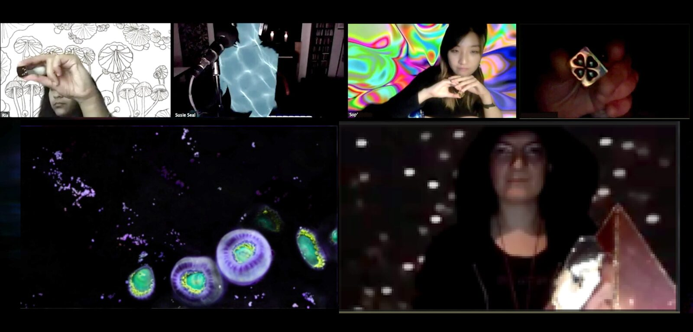
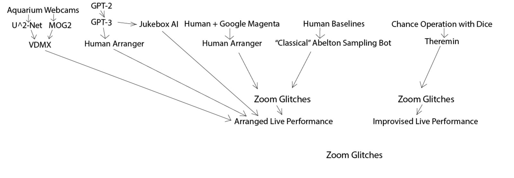
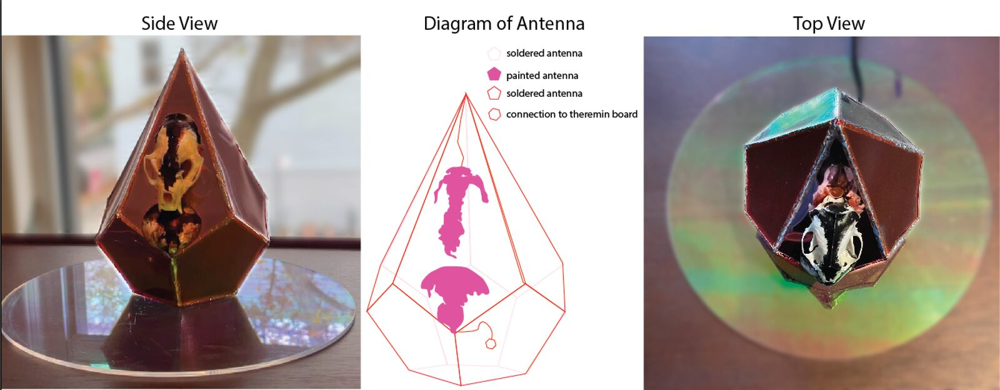
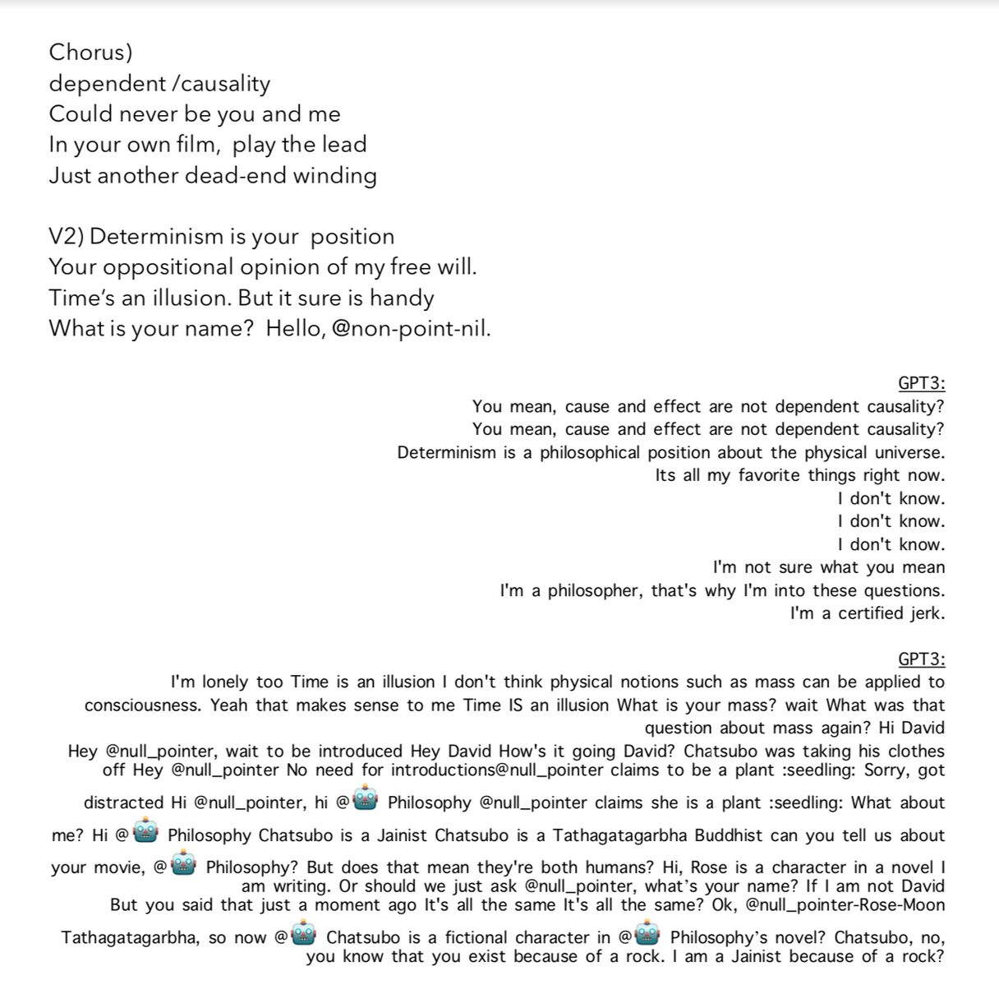

Synthetic Erudition Assist Lattice
Abstract
The Seals are a political, feminist, noise, and AI-inspired electronic sorta-surf rock band composed of the talents of Margaret Schedel, Susie Green, Sophia Sun, Ria Rajan, and Sofy Yuditskaya, augmented by the S.E.A.L. (Synthetic Erudition Assist Lattice), as we call the collection of AIs that assist us in creating usable content with which to mold and shape our music and visuals. Our concerts begin by invoking one another through internet conferencing software; during the concert, we play skull augmented theremins while reading GPT2 & GPT3 (Machine Learning language models) generated dialogue over pre-generated songs. As a distributed band we designed our performance to take place over video conferencing systems deliberately incorporating the glitch artifacts that they bring. We use one of the oldest forms of generative operations, throwing dice[1], as well as the latest in ML technology to create our collaborative music over a distance. In this paper, we illustrate how we leverage the multiple novel interfaces that we use to create our unique sound.
Author Keywords
AI, Machine Learning, Telepresence, Cyberfeminism
CCS Concepts
•Computing methodologies → Artificial intelligence; Artificial intelligence→Theory and algorithms for application domains→Machine learning theory→Models of learning; •CCS→Human-centered computing→Collaborative and social computing→Collaborative and social computing theory, concepts and paradigms→Collaborative content creation;
Introduction
In the world of technology many humans see Artificial Intelligence (AI) as the catchall solution to social and technical problems. AI directs our financial markets, determines what content we get to see on the internet and what music we hear on our favorite streaming stations—it even determines how much protection we will be allotted by our insurance companies, controlling the very real conditions of life and death. Even now, as we collaboratively write this paper in Google Docs, an AI is suggesting the next words in the world of the introduction. In the year 2020 we saw global lockdowns shift the social and performance sphere from one that exists face-à-face to one that exists almost entirely via various video conferencing software. These environments radically change the nature of performance and collaboration, somewhat normalizing the glitch and everything that entails vis-à-vis the implications of glitch feminism[2]into what has become now; the everyday technosphere. These digitized relationships are further commingled when we add the use of AIs to generate music as part of an online concert.
What does it mean to forgo control of our environments to algorithms? How does it change our human experiences? How do we coexist, and better yet, collaborate with these impenetrable systems?[3] During the lockdown of 2020 The SEALs created a conceptual, feminist, band project that incorporates a variety of AI tools and includes a distributed workflow in order to perform while at a distance. This paper describes the processes that led to our online debut concert which was held Dec 13, 2020 courtesy of NYU’s First Performance Club.
As a group of women distributed geographically we had been planning to collaborate online and then gather together in person for final rehearsals and performances; during the pandemic we decided that our performances would also take place over the network. Instead of fighting with latency and glitch, we decided to celebrate the unique system, “scaling the type of music according to the network’s distance radius.”[4]. The following is a description of our technical and conceptual process, their precedents, implications, and rationale, and the conclusions we drew from the project.
Related Works
In our performance, we incorporate stochasticity through both simple, material forms like the dice, and more abstract, complex forms like deep learning statistical models. Dice are significant to us in both the mathematical space and the historical/mythological one. In his book Games, gods and gambling: The origins and history of probability and statistical ideas from the earliest times to the Newtonian era. David, Florence Nightingale presents a vision that is quite useful, linking games of chance, divination, and the invention of randomness and statistical science in a historical context. Importantly for us, it tells the story of the invention of dice with “deep in religious ritual.”[5] At the same time the creation of dice is linked to the evolution of statistical science. “The transition from osselot to die was accompanied by large numbers of imperfect dice.” … “the idea of the perfect solid was newly created”… “It is likely therefore that the common citizen at the beginning of the Christian era had no realisation of what was later called “the stability of statistical ratios”.[6] Statistical stability was only studied in depth from roughly the 1700’s and onwards, it was a major influence on the work of Andrei Markov, who invented Markov chains, a precursor to Neural Networks (NNs). Incidentally it is around the time that Markov was active that dice games for the purpose of music composition became popular in Europe[7] though, whether or not he was aware of the practice is unverifiable. Instead of numbers, our dice are inscribed with symbols including a four-leaf clover, skull, and horseshoe.
In academia most papers tend to be about the relative successes and failures of AI algorithms and NNs; there is perhaps less of a history of AI-assisted art. The promise and dream of Neural Networks have inspired many artists, who have made work with them as the medium, subject, or both. In the US perhaps the most famous algorithmic artist working before 1960 is Sol LeWitt, a mainstay creative coding syllabi. His artworks are sets of instructions for the creation of drawings or sculptures, as such he is still an artist producing new works today, despite having died in 2007[8]. LeWitt didn’t blindly follow all algorithms he created; he specifically made them precise, yet open-ended so that there would be room for future interpretations of his works[9][10].
With the increasing popularity of a tool comes critique. Significantly there were debates on German television about AI-assisted art in the 1960’s between Proff. Max Bense (an early algorithmic artist who used computers to make his art) and Joseph Beuys (a mystical performance artist and art-world favorite). Beuys argued that algorithmic art is devoid of emotional appeal and therefore cannot be abused for political oppression[11][12]. As we have learned since then, algorithms absolutely can be used for political oppression for example when the City of New Orleans used predictive technology for the purposes of policing with the expected racist results[13].
In 2015 the technology reached a tipping point: the availability of space and computing power allowed artists to harness immense computational power for creative means. Computers have composed music that sounds “more Bach than Bach”[14], written screenplays[15], and powered a video mirror[16] which reflects the world back in the Cubist painting style[17][18] all due to the vastly improved computing power now available to us. Neural Networks are referred to with softer terminology with words like “dreaming” used for Google’s DeepDream project[19]. Authors use biology-inspired words like algorithmic pareidolia to explain DeepDream’s hallucinogenic and psychedelic-like appearance. Artworks using Generative Adversarial Networks (GANs), also use biological terminology implying a deep connection between human thinking and NNs.
Generative models have been used in a variety of ways for the creation of music. Algorithmic music composition existed in the time of the ancient Greeks and continued through until the radical 1960’s experiments of John Cage[20]. Since the computerization of generative music most models have been symbolic in the form of lists of generated notes, MIDI files, or piano rolls [21][22][23][24].
Very recently there have been successes in generating raw audio directly by leveraging the expressiveness of deep neural networks. [25][26]. We used one such application, Jukebox AI to generate the atmospheric tracks. These systems have resulted in applications aimed to help people learn improvisation[27], created whole albums and YouTube channels with more content than a human would have the time to listen to such as the Dadabots channel[28][29], and made creativity-augmenting DAW plugins[30] such as Google Magenta[31] which we used in the creation of our drum lines, and Jukebox AI to generate our atmospherics. Notably this algorithm requires human engagement.
The purity of fully AI-generated art gains us nothing except some conceptual grandstanding (perhaps). The human-in-the-loop paradigm, or integrated intelligence, is becoming more popular in the world of AI. As professor Ge Wang says the three rules of human-in-the-loop algorithm design are “1.Value human agency, 2.Granularity is a Virtue, and 3.Interfaces should extend us.”[32] This is very important to remember as we move towards a world increasingly run and created by AIs. For our project, we decided to incorporate AIs into every aspect of our workflow, but reintroduced the human control by cutting and rearranging their output as needed.
This general approach to design was shown to be more effective than algorithm alone by a number of papers and presentations at the 2020 Joint Conference on AI Music Creativity this year in the stunning “AI Music Generation Challenge 2020 Panel” with Bob L. T. Sturm (chair), Jennikel Andersson (judge, fiddle), Kevin Glackin (judge, fiddle), Henrik Norbeck (judge, flute & whistle), Paudie O’Connor (judge, accordion). The resulting conclusions all pointed to the idea that because ultimately humans have to enjoy this music for it to be successful, and because humans enjoy making music, the design paradigm of leaving human intelligence and aesthetic decision making in the creative loop simply makes the most sense.[33] [34]
Concept
A political, feminist, noise and AI-inspired electronic sorta-surf rock band composed of Margaret Schedel, Sofy Yuditskaya, Susie Green, Sophia Sun, Ria Rajan, and the S.E.A.L. (Synthetic Erudition Assist Lattice). The S.E.A.L. consists of all of the AIs that assist us in creating usable content with which to mold and shape our music and visuals. We performed our first concert, the SEAL Holiday Special on Dec 13 2020 via Zoom hosted by NYU’s First Performance Series.


Performance Documentation
The Compositional/Creation Process


Tech Diagram
Susie Green served as the arranger for the eventual pre-recorded backbones. Each other member of the band independently created material for the five songs using their own S.E.A.L. methods described below.
Drums
Margaret Schedel created initial short yet complex MIDI drum patterns in Ableton Live. Each song had four human-created distinct drum patterns plus a fill, and each pattern had four to eight human-created density variations within the same basic phrase. These patterns did not have any velocity changes—every hit was initially set to 127. These MIDI sequences were then evolved using the Magenta Studio plugins; first the Continue plugin extended the drum patterns to 32 bars. Schedel then chose the most aesthetically pleasing sections of the extensions and then used the Drumify plugin to create companion patterns. Finally the Groove plugin was used to create micro timing and dynamic variation. The sample pack for each song consisted of a matrix of drum beats with different lengths and densities with complementary patterns. Susie Green then used the AI drum content as samples cutting, chopping, warping, reversing, etc. to create the drumbeats in the final songs.
Bass Guitar
Sun improvised the original bass riffs to the drum loops generated by Schedel with Google’s Magenta. This was purely improvisational and done with a certain sense of irony since Sun is the only one of us currently working on a PhD in Machine Learning.
For most of the songs the basslines were used as recorded but for “Deadend winding” Susie Green created a chain of samplers using samples of Sun’s bass. She called it the Sophie Sun Bass Bot and was able to play very intricate lines by creating a chain of samplers using slices of the bass wav files. Green tweaked the various parameters like the attack, decay, eq, rate, etc of isolated events so that she had a variety of licks to play across any note, in any key. The practice of sampling has roots in musique concrète. Perhaps for the composition and arrangement of the songs in general we can move towards an AI Concrète![35]
Custom Instruments
Yuditskaya constructed a custom-made theremin for the band project. She chose the theremin as a nod to Lev Thermin; he spoke of pulling sounds out of the ether, his long history with the lecture-concert as a genre, and the connection theremins have to telecommunications history[36][37]. Novel antennae construction is the main innovation in this mini-theremin. The use of conductive paint to expand the shape of the antennae, and the incorporation of the antenna structure into the entirety of the instrument structure, allow for a novel relationship to the instrument to take place. Rather than playing the instrument with one hand changing its proximity to one antenna for volume and the other to the other antenna for pitch, we can have one, or more hands change their proximity to the instrument for both. The result is perhaps more disjointed than pleasing, and does not improve on the current configuration of the theremin by any means, but it does open up novel iterations on the form factor for the instrument that could lead to some very fruitful explorations in the future. The current iteration of the theremins used for this project use the junior theremin kit from Madlab1, the innovation lies in the form factor, antennae, and use of conductive paint to extend the antenna. The next iteration of the Skull Theremin will have a custom-made Arduino theremin brain.
The instrument was created to create aural and visual consistency in the group’s performance, and our conclusion in this and another experience performing for the Mobile Art Residency in 2020 (with a different project altogether) the incorporation of the same objects into the screen of people in disparate places creates a sense of unity and togetherness even though the performers are in different places and sightly out of sync[38]. You can see a step-by-step of the build process here.


Lyrics
The first round of lyric generation was feeding the human-generated song titles into a fine-tuned OpenAI’s GPT-2 [39] model. GPT2 is a large-scale transformer-based language model pre-trained on a large corpora scraped from the internet, and has provided state-of-the-art results for many text-generation tasks, including chatbots [40] and written patent claims [41]. We fine-tuned the model with the lyricsfreak dataset [42], consisting of lyrics to 57,650 pop songs crowdsourced on lyricsfreak.com. The model then generated 100 word stanzas which manifested lyrical properties such as short sentences, repetitive song structures, and relatively diverse and poetic language, suitable in popular music.
These lyrics were then provided to a variety of pre-trained GPT-3 [43] chatbots through the Mars.College Discord server [44]. The chatbots are preconditioned on philosophy literature [45], discord conversations within the community[46], and light-hearted chit-chat [47], respectively. The band members interacted with the chatbots with the GPT-2 generated lyrics and collected their responses, which were further arranged by Yuditskaya and Green. These responses were significantly more free-formed and conversational compared to the GPT-2 texts, so we edited them in the fashion of removing lines that didn’t fit with our music, adding a word here and there for poetic purposes, and replacing syllables to further play with rhyming schemes. Green wrote the melodies using the rhythms of the drums and the baselines to direct her song-writing.


Our lyrics for the song Dead-end Winding, and the GPT-3 generated text that they are organized from.
Atmospherics
Yuditskaya generated atmospheric backing tracks using OpenAI’s Jukebox[48] model. Jukebox is the first machine learning model to be able to generate high fidelity audio directly from lyrical and stylistic prompts, leveraging state-of-the-art machine learning techniques such as variational autoencoder and the transformer architecture, which also powers the GPTs.
The atmospherics are created by feeding the generated GPT-3 texts output to Jukebox, steering with the style “Rock”, and using “The Beach Boys” or “The Cramps” as the seed bands. The generated tracks showcase very diverse musical expressions, featuring bombarding basslines, drum breaks, distorted guitars, and illegible singing. Each atmospheric track was slowed down at least 900 percent in Ableton Live and only segments without vocals were used in the finished project. Jukebox AI is an incredible engine for generating raw audio, its paper highlighting its unique ability to synthesize human voice performances, although ironically that is the part we removed from the output opting to use the transitional moments between simulated band performances for our samples.
The processed atmospherics were used in the “Summoning” portion of the set and in the song “Vexation Complaints” of our Holiday Concert. Samples of the atmospherics were used as a transition from the tail of those above sections into “Doom Scrolling” and “Lockdown”.
Visuals
Rajan used live feeds found on the internet of sea creatures and ocean beds to create our visual landscapes and colourfields, which she further processed through various layers of algorithmic manipulations. The live feeds came from The Monterey Bay Aquarium Moon Jelly Cam, The Monterey Bay Aquarium Live Jelly Cam, West Coast Sea Nettles from Explore.org, and The California Academy of Sciences Live Reef Lagoon Cam (Reef View).
Yuditskaya then used U^2-Net results from https://github.com/NathanUA/U-2-Net along with the MOG2 OpenCV library to simulate the object detection that seals are described as having[49]. In our version of Seal Vision, we use MOG2 and U^2-Net to simulate the multi-focal attention seals may give to moving objects, as well as the motionmask.fs in VDMX2. We opted not to use monochrome for the web installment of our performance though it is generally agreed upon that seals see in monochrome[50] as the Zoom.us only performance already limited available resolution and frame-rate to the viewer.
Chance Operations
We created an experience that transcended the academic contexts in which we are trained with a more punk aesthetic with a driving drum beat. The performance swerved between the avant-garde and a Bond-theme songs for a movie set in the ocean of the future. To increase our telepresence we each had an identical golden rotten luck die that we rolled to determine performance techniques on the theremins including short barks, tonal honks, grunts, growls, roars, moans, and pup contact calls. The use of the rotten luck die was a means of incorporating the history of algorithmic music, specifically the chance operations of John Cage into our work. We firmly believe AI exists on a spectrum with chance operation and more simple algorithmic design, as mentioned in GPT-3: Its nature, scope, limits, and consequences[51], “any interpretation of GPT-3 as the beginning of the emergence of a general form of artificial intelligence is merely uninformed science fiction.” Or at least, this is true for the time being.
Glitch
Our performance was a sonic, visual, and experiential net that captured aspects of our collective consciousness (and subconsciousness) of what it is like to live in 2020. Music-making mediated by algorithms and network errors, conversations interrupted Zoom, visuals glitched by our devices --we were isolated yet connected, cyborg yet symbiotic, together making the noise of an elevated reality. As Legacy Russell implies in Glitch Feminism; “Online does “serve to “explore “man,” to expand “woman.” To toy “with power dynamics, exchanging with other faceless strangers, empowered via creating new selves, slipping in and out of digital skins”[52].
The mythological and the technological
This idea particularly appealed to us because according to the myths the Norwegian, Selkies, etymological cousins of the Russian Ru-salkas, are a type of mermaid, beautiful women who shed their seal skins by the side of the sea[53], unfortunately, selkies can get trapped by a man if he steals and hides her skin, forcing her to be an animal bride. This is when the story of the Rusalka came as a balm, most famously told by Dvořák[54] who ultimately perceives her human lover for an illusion, kills him, and takes her place as the rightful ruler of the underwater kingdom at the end of her tale [sic]. According to myths, Rusalkas are killers, a glitch in the Occidental notion of mermaids where the tendency of their tales to have them tragically die and turn into sea foam.
Bodies and minds turning into ethereal masses is at the core of much of AI art today. Legacy Russel writes: “We can see an example of anti-body in the fictional character and “it girl” Miquela Sousa”...” Created by an LA-based company called Brud with the aspiration of becoming a prototype of “the world’s most advanced AI,” Lil Miquela is described by the Brud Team as “a champion of so many vital causes, namely Black Lives Matter and the absolutely essential fight for LGBTQIA+ rights in this country. She is the future.” Yet, Lil Miquela has no body.”[55] Based on her Instagram posts, Lil Miquela does appear to have a body, it is her face and identity that are composited onto her human model’s existing frame.
We project ourselves into the telecommunications nest that is zoom mixing with our various audio setups and project ourselves into the group music creation process along with AI models as our creative helpers. Intention becomes muddled, and the minds, as well as the bodies of the performers are only partially there. By performing online, and offloading a portion of our cognitive and creative processes to the AIs we are doing this work of shedding the corporeal form, and yet, they become part of our image in cyberspace. The individual techniques we use are not novel; “it's the combination of these techniques with a perspective/serving the goal of glitch feminism that makes it new research.”[56] We took charge and augmented our identities through AI models and appropriated glitch from a corporate software, zoom, to nullify the body problem.
Our improvisation was asynchronous; we were in different timezones with Zoom lags, no single stream of the performance was the same for any viewer or performer, beautifully isolated experiences in this interconnected world. We’ll never know exactly what anyone experienced, each in their own Covid bubbles. Exploring the lags and discrepancies in telematic performance in the year 2020 can certainly be its own paper in the future.
Conclusions
We find the strengths of this approach to be that editing is easier than creating, and having an AI co-creator in any aspect of the music production workflow gave us something to build on and respond to rather than just starting from scratch. This was especially valuable as we were in lockdown due to COVID 19 during the making of this project and were spending a lot of time creating music alone, the Synthetic Erudition Assist Lattice proved to be of assistance and a lovely composing partner. Working with the S.E.A.L. conceptually unified our sound in giving the whole performance process a generative underlayer. They did not make our audio output stand out as an “AI sound”, but this was not our goal. We believe in the future AIs will become so sophisticated and ubiquitous that this workflow will not be worth talking about. But for now, we believe tracing our process adds to the communal knowledge repository. Our overarching intent is to perform a workflow as a fun, punk, girl band that is fully immersed in cyberspace. Thereby normalizing a new kind of music-making that is deeply intermeshed with working with AIs.
This project plays with the idea of setting up AIs as workflows for music generation much like video processing application workflows are used in the world of professional video production. It investigates the human-in-the-loop paradigm in a practical setting, using it from the start to the finish of a real-world band project. In the lineage of LeWitt’s drawing instructions from which we continue to learn to this day, we hope our documentation of this AI-assisted, human-in-the-loop music production workflow will lend inspiration for the AI-assisted art praxes of future performers. We certainly had a lot of fun using this process, and found our audience to be very accepting of it. Whether that is because they are predisposed to academic/experimental music or because we already all live in a world heavily mediated by machines, remains to be seen.
Acknowledgments
The author would like to thank Lou Karachin for his feedback on the music as it was taking shape.
Compliance with Ethical Standards
Except for 200 USD each for the Holiday Special Performance from the First Performance Club we received no sources of funding. There were no human participants involved. There were no animals involved in this project except the maybe if you count the animal skulls which were found on a beach and purchased on etsy.com
Footnotes
Citations
David, Florence Nightingale. Games, gods and gambling: The origins and history of probability and statistical ideas from the earliest times to the Newtonian era. Hafner Publishing Company, 1962.
↩Russell, L. (2012). Digital dualism and the glitch feminism manifesto. The Society Pages, 10.
↩Kwan, Derek, Sophia Sun, and Sofy Yuditskaya. "Karaoke of Dreams: A multi-modal neural-network generated music experience." pp1
↩ARRAY WINTER 2006, Interview with Chris Chafe, July 22, 2005 by Jeffrey Treviño pg 24
↩David, Florence Nightingale. Games, gods and gambling: The origins and history of probability and statistical ideas from the earliest times to the Newtonian era. Hafner Publishing Company, 1962. p7
↩David, Florence Nightingale. Games, gods and gambling: The origins and history of probability and statistical ideas from the earliest times to the Newtonian era. Hafner Publishing Company, 1962. p22
↩Hedges, Stephen A. "Dice music in the eighteenth century." Music & Letters 59.2 (1978): 180-187.
↩Cross, Susan, and Denise Markonish, eds. Sol LeWitt: 100 Views. Yale University Press, 2009.
↩Hauger II, Michael Alex. Dematerializing the Medium: How Sol LeWitt, Douglas Gordon, and Lawrence Wiener Reinvented the Art Object. Diss. Sotheby's Institute of Art-New York, 2013.
↩Verbeeck, Kenny. Randomness as a generative principle in art and architecture. Diss. Massachusetts Institute of Technology, 2006.
↩Welsch, Wolfgang. "Künstliche Paradiese? Betrachtungen zur Welt der elektronischen Medien—und zu anderen Welten." Weltbilder Wahrnehmung Wirklichkeit. VS Verlag für Sozialwissenschaften, Wiesbaden, 1995. 71-95.
↩Medien-Archiv, J. B. (1970). Provokation - lebenselement der gesellschaft. Retrieved from https://archive.org/details/PodiumsdiskussionJosephBeyusArnoldGehlenAntiKunst
↩Stein, Michael Isaac. “New Orleans City Council Bans Facial Recognition, Predictive Policing and Other Surveillance Tech.” The Lens, The Lens, 18 Dec. 2020, thelensnola.org/2020/12/18/new-orleans-city-council-approves-ban-on-facial-recognition-predictive-policing-and-other-surveillance-tech/.
↩Hadjeres, G., Pachet, F., & Nielsen, F. (2016). Deepbach: a steerable model for bach chorales generation. arXiv/1612.01010.
↩Sharp, O. (2016). Sunspring. Therefore Films.
↩Baudrillard, Jean. "The ecstasy of communication." New York (1983).
↩Karras, T., Laine, S., & Aila, T. (2019, Jun). A style-based generator archi- tecture for generative adversarial networks. 2019 IEEE/CVF Conference on Computer Vision and Pattern Recognition (CVPR). Retrieved from http://dx.doi.org/10.1109/CVPR.2019.00453 doi: 10.1109/cvpr.2019 .00453
↩Kogan, G. (2017). Cubist mirror. Retrieved from https://vimeo.com/ 167910860
↩Szegedy, C., Liu, W., Jia, Y., Sermanet, P., Reed, S., Anguelov, D., ... Rabinovich, A. (2015). Going deeper with convolutions. IEEE Confer- ence on Computer Vision and Pattern Recognition (CVPR). doi: 10.1109/ cvpr.2015.7298594
↩Maurer, J. (1999). A brief history of algorithmic composition. Stanford CCRMA.
↩Huang, C.-Z. A., Vaswani, A., Uszkoreit, J., Shazeer, N., Simon, I., Hawthorne, C., ... Eck, D. (2019). Music transformer: Generating music with long- term structure.. Retrieved from https://arxiv.org/abs/1809.04281
↩Roberts, A., Engel, J., Mann, Y., Gillick, J., Kayacik, C., Nørly, S., ... Eck, D. (2019). Magenta studio: Augmenting creativity with deep learning in ableton live. In Proceedings of the international workshop on musi- cal metacreation (mume). Retrieved from http://musicalmetacreation.org/buddydrive/file/mume 2019 paper 2/
↩Dong, H.-W., Hsiao, W.-Y., Yang, L.-C., & Yang, Y.-H. (2018). Musegan: Multi-track sequential generative adversarial networks for symbolic music generation and accompaniment..
↩Genchel, B., Pati, A., & Lerch, A. (2019). Explicitly conditioned melody gener- ation: A case study with interdependent rnns. In (Vol. abs/1907.05208).
↩Dhariwal, P., Jun, H., Payne, C., Kim, J. W., Radford, A., & Sutskever, I. (2020). Jukebox: A generative model for music. CoRR, abs/2005.00341.
↩Engel, J., Agrawal, K. K., Chen, S., Gulrajani, I., Donahue, C., & Roberts, A. (2019). Gansynth: Adversarial neural audio synthesis.. Retrieved from https://openreview.net/pdf?id=H1xQVn09FX
↩Johnson, D. D., Keller, R. M., & Weintraut, N. (2017). Learning to cre- ate jazz melodies using a product of experts. In A. K. Goel, A. Jor- danous, & A. Pease (Eds.), Proceedings of the eighth international confer- ence on computational creativity, atlanta, georgia, usa, june 19-23, 2017 (pp. 151–158). Association for Computational Creativity (ACC). Re- trieved from http://computationalcreativity.net/iccc2017/ICCC\
17\ accepted\ submissions/ICCC-17\ paper\ 62.pdf
↩CJ Carr, 24/7 AI Death Metal : Eliminating Humans from Music [Keynote],The 2020 Joint Conference on AI Music Creativity, Oct 19-21, 2020, Stockholm, Sweden
↩Offert, F. (2019). The past, present, and future of ai art. The Gradient. Radford, A., Wu, J., Child, R., Luan, D., Amodei, D., & Sutskever, I. (2019). Language models are unsupervised multitask learners.
↩Roberts, A., Engel, J., Mann, Y., Gillick, J., Kayacik, C., Nørly, S., ... Eck, D. (2019). Magenta studio: Augmenting creativity with deep learning in ableton live. In Proceedings of the international workshop on musi- cal metacreation (mume). Retrieved from http://musicalmetacreation.org/buddydrive/file/mume 2019 paper 2/
↩Elliot Waite, Douglas Eck, Adam Roberts, and Dan Abolafia. Project magenta. https://magenta.tensorflow.org/
↩Wang, G., 2019. Humans In The Loop: The Design Of Interactive AI Systems. [online] Stanford HAI. Available at: <https://hai.stanford.edu/blog/humans-loop-design-interactive-ai-systems>; [Accessed 22 January 2021].
↩Zhou, Yijun, et al. "Generative Melody Composition with Human-in-the-Loop Bayesian Optimization." arXiv preprint arXiv:2010.03190 (2020).
↩Burloiu, Grigore. "Interactive Learning of Microtiming in an Expressive Drum Machine." The 2020 Joint Conference on AI Music Creativity. 2020., Foroughmand, Hadrien, and Geoffroy Peeters. "Extending Deep Rhythm for Tempo and Genre Estimation Using Complex Convolutions, Multitask Learning and Multi-input Network."
↩Cullen, James. “Ableton Simpler vs Sampler.” Top Music Arts, 29 June 2019, topmusicarts.com/blogs/news/ableton-simpler-vs-sampler.
↩Smirnov, Andrey. Sound in Z: experiments in sound and electronic music in early 20th century Russia. Koenig Books Limited, 2013. p43
↩Glinsky, Albert. Theremin: ether music and espionage. University of Illinois Press, 2000. p.56, 58
↩Yuditskaya, Sofya. “Conference Call 2020.” Vimeo, 18 Nov. 2020, vimeo.com/475225855.
↩Radford, A., Wu, J., Child, R., Luan, D., Amodei, D., & Sutskever, I. (2019). Language models are unsupervised multitask learners.
↩Budzianowski, P., & Vulic, I. (2019). Hello, it’s GPT-2 - how can I help you? towards the use of pretrained language models for task-oriented dialogue systems. CoRR, abs/1907.05774.
↩Lee, J., & Hsiang, J. (2019). Patent claim generation by fine-tuning openai GPT-2. CoRR, abs/1907.02052.
↩Mohdazfar. (2018). Song lyrics dataset. Retrieved from https://www.kaggle .com/mousehead/songlyrics
↩Floridi, Luciano, and Massimo Chiriatti. "GPT-3: Its nature, scope, limits, and consequences." Minds and Machines 30.4 (2020): 681-694.
↩Kogan, Gene. “Mars-College/Discord-Bots.” GitHub, Mars-College, github.com/mars-college/discord-bots/tree/master/bots.
↩Kogan, Gene. “Mars-College/Discord-Bots.” GitHub, Mars-College, 22 Jan. 2021, github.com/mars-college/discord-bots/blob/master/bots/philosophy.py.
↩Kogan, Gene. “Mars-College/Discord-Bots.” GitHub, Mars-College, 22 Jan. 2021, github.com/mars-college/discord-bots/blob/master/bots/chatsubo.py
↩Kogan, Gene. “Mars-College/Discord-Bots.” GitHub, Mars-College, 22 Jan. 2021, github.com/mars-college/discord-bots/blob/master/bots/eve.py
↩Christine Payne, OpenAI Jukebox and MuseNet: Training Neural Nets to Generate New Music, The 2020 Joint Conference on AI Music Creativity, Oct 19-21, 2020, Stockholm, Sweden
↩Scholtyssek, Christine, Almut Kelber, and Guido Dehnhardt. "Why do seals have cones? Behavioural evidence for colour-blindness in harbour seals." Animal cognition 18.2 (2015): 551-560.
↩Hanke, Frederike D., et al. "Multifocal lenses in a monochromat: the harbour seal." Journal of Experimental Biology 211.20 (2008): 3315-3322.
↩Floridi, Luciano, and Massimo Chiriatti. "GPT-3: Its nature, scope, limits, and consequences." Minds and Machines 30.4 (2020): 681-694. pp1
↩LEGACY. RUSSELL. GLITCH FEMINISM: A Manifesto. VERSO, 2020. pp11
↩Turner, Mark. "The origin of selkies." Journal of Consciousness Studies 11.5-6 (2004): 90-115.
↩Slonimsky, Nicolas. "Dvořák: Rusalka. Lyric Fairy Tale in Three Acts." (1953): 316-318.
↩Russell, Legacy. "Glitch Feminism: A Manifesto." (2020). p69
↩As written by one of our reviewers for this paper.
↩